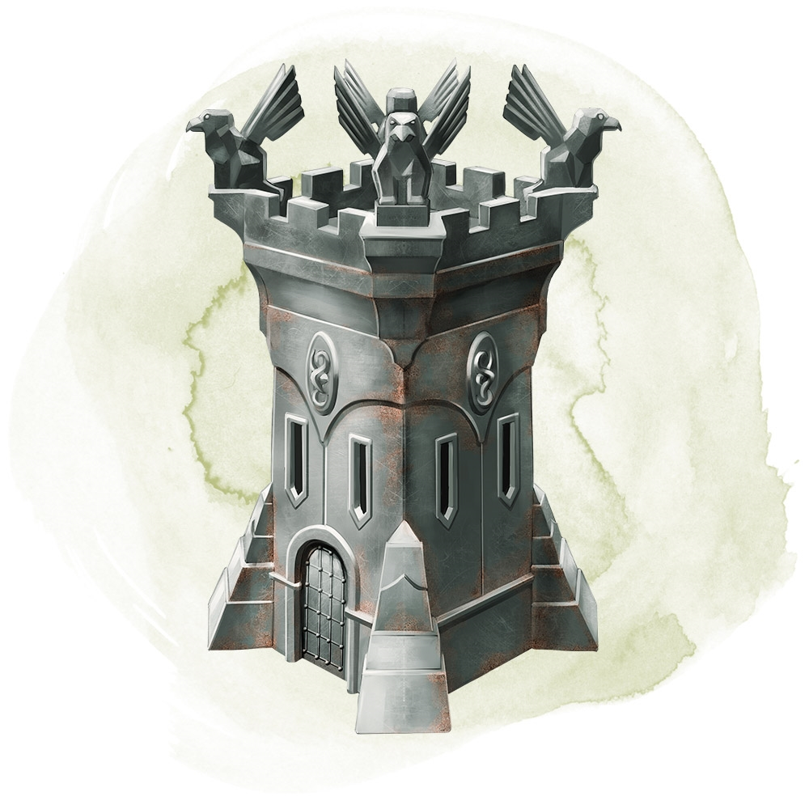

Pomocou akcie môžeš položiť na zem coulovú kovovú kocku a vysloviť jej zaklínadlo. Kocka rýchlo narastie do pevnosti, ktorá vydrží, kým pomocou akcie nevyslovis zaklínadlo, ktoré ho zruší, čo funguje, len keď je pevnosť prázdna.
Pevnosť je štvorcová veža o strane 4 siahy a vysoká 6 siah, so strieľňami na všetkých stranách a cimburím hore. Jej interiér je rozdelený na dve poschodia, ktoré spája jeden rebrík vedúci po jednej stene. Rebrík končí padacími dverami vedúcimi na strechu. Keď sa pevnosť aktivuje, veža má malé dvere na strane čelom k tebe. Dvere sa otvoria len na tvoj rozkaz, ktorý môžeš vysloviť ako bonusovú akciu. Sú imúnne voči kúzlu zaklopať či podobnej mágii.
Každý tvor v oblasti, kde sa pevnosť objaví, si musí hodiť na záchranný hod na Obratnosť s SO 15. Keď tvor neuspeje, utrpí drvivé zranenia 10k10, alebo polovičné zranenia pri úspešnej záchrane. V každom prípade je tvor odtláčaný na voľné miesto hneď vedľa pevnosti. Predmety, ktoré nikto nedrží ani nenesie, utrpia toto poškodenie a sú odtlačenie automaticky. Pevnosť je z Adamantina a jeho mágia zabraňuje prevráteniu. Strecha, dvere a steny majú každý 100 životov, sú imúnne voči nemagickým zbraniam okrem obliehacích zbraní a sú odolní voči všetkým poškodeniam. Pevnosť možno opraviť len kúzlom želanie (toto použitie kúzla sa berie ako napodobenie kúzla 8. či nižšie úrovne). Každé zoslanie želania spôsobí, že strecha, dvere, alebo jedna zo stien si obnoví 50 životov.
